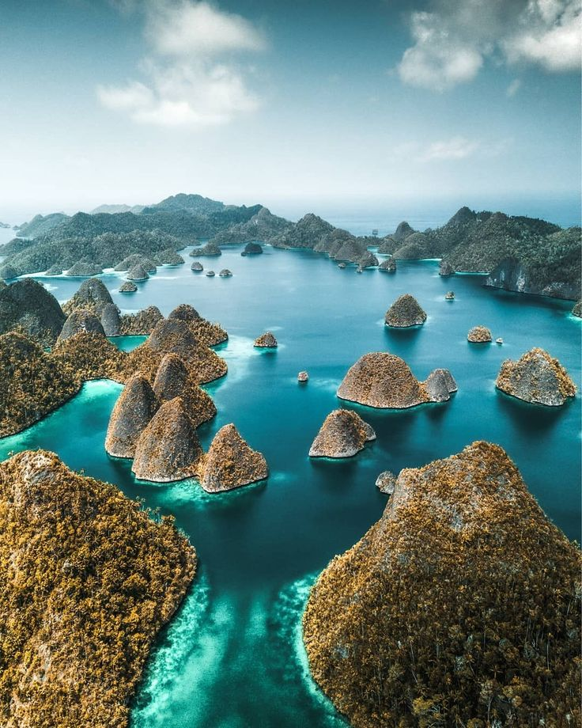

Profil Pantai Kuta
Pantai Kuta adalah salah satu pantai paling terkenal di Bali, Indonesia. Dikenal dengan ombaknya yang besar, pantai ini menjadi tujuan utama bagi para peselancar. Sejarah Pantai Kuta dimulai sebagai desa nelayan kecil sebelum berkembang menjadi destinasi wisata internasional yang ramai.
Pantai ini juga memiliki makna budaya yang dalam bagi masyarakat setempat, di mana berbagai upacara dan festival sering diadakan untuk menghormati laut dan alam.
Profil Pantai Raja Ampat

Pantai Raja Ampat terletak di Papua Barat dan dikenal dengan keindahan alam bawah lautnya yang luar biasa. Sejarah Raja Ampat kaya akan budaya dan tradisi lokal, di mana masyarakat setempat menjaga kelestarian lingkungan dan warisan budaya mereka.
Pantai ini juga menjadi lokasi penelitian ilmiah dan konservasi, menarik perhatian para peneliti dan penyelam dari seluruh dunia.
Profil Kepulauan Seribu
Kepulauan Seribu adalah gugusan pulau yang terletak di utara Jakarta. Sejarah Kepulauan Seribu mencakup peran pentingnya sebagai tempat perlindungan bagi nelayan dan sebagai lokasi strategis selama masa penjajahan. Saat ini, kepulauan ini menjadi tujuan wisata yang populer dengan keindahan alam dan keanekaragaman hayati yang menakjubkan.
Selain itu, Kepulauan Seribu juga memiliki nilai sejarah yang tinggi, dengan banyak situs bersejarah yang dapat dijelajahi oleh pengunjung.